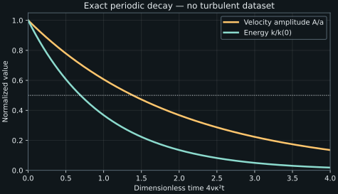

7. Turbulent and mean energy budgets
The Reynolds stresses retain directional information. Their half-trace retains the kinetic energy of the fluctuations. That contraction removes pressure redistribution from the scalar equation, but it does not close the problem. The decisive next step is to derive the energy equation for the mean motion beside it: the same stress–gradient contraction appears with opposite signs, revealing an exchange of mechanical energy between mean and fluctuating motion.
Lessons 18–20 finish the governing-equation development: an alternative viscous grouping, the turbulent kinetic-energy equation, the meaning of transport and destruction, and the mean-motion energy equation. Lesson 21 starts the boundary-layer discussion and belongs to the next chapter. We retain the lecture's logical construction while making the contractions, flux signs, and limits of its general claims explicit.
7.1 Equivalent viscous groupings must describe the same balance L18 · 00:15
Use an incompressible Newtonian fluid with constant density \(\rho\gt 0\) and kinematic viscosity \(\nu\gt 0\). Instantaneous velocity is \(u_i\), its ensemble mean is \(U_i=\mathbb E[u_i]\), and \(u_i'=u_i-U_i\). Both instantaneous and mean velocities have zero divergence. Assume enough smoothness, finite moments, and interchange of differentiation and expectation for the following identities. Set \(R_{ij}=\mathbb E[u_i'u_j']\), the positive velocity covariance, and \(k=R_{ii}/2\). The index \(i\) in the trace is summed over all three components.
The preceding stress derivation used the simplified molecular acceleration \(\nu\partial_j\partial_j u_i'\). One can instead retain the divergence of the kinematic viscous stress \(t_{ij}'=2\nu s_{ij}'\), where \(s_{ij}'=(\partial_j u_i'+\partial_i u_j')/2\). The word “kinematic” here means stress divided by density: \(t_{ij}'\) has units \(\mathrm{m^2\,s^{-2}}\). Incompressibility and constant \(\nu\) make \(\partial_j t_{ij}'=\nu\nabla^2u_i'\). These are the same acceleration written differently.
Multiply the full-stress expression by \(u_i'\), average, and use the product rule:
The symmetric stress contracted with the antisymmetric part of the gradient vanishes, explaining the last equality. This grouping uses strain-based physical molecular dissipation. The velocity–stress flux can be expanded further:
For its first term, \(\mathbb E[u_i'\partial_j u_i']=\partial_j\mathbb E[u_i'u_i']/2=\partial_jk\). For its second, \(\partial_iR_{ij}=\mathbb E[(\partial_i u_i')u_j'+u_i'\partial_i u_j']=\mathbb E[u_i'\partial_i u_j']\), because the summed divergence is zero. Consequently
The extra divergence in one grouping cancels the extra term in its destruction expression. Lesson 18 notes that the unsimplified route displays additional viscous correlations. They are additional displayed terms, not additional independent physics under our incompressible constant-property assumptions. Neither a count of symbols nor a different grouping can change the underlying exact balance. Variable properties or compressibility would invalidate the simplification and require a new derivation.
7.2 Contract the tensor equation, retaining every factor L18 · 08:09
The turbulent kinetic energy \(k=\mathbb E[u_i'u_i']/2\) has units \(\mathrm{m^2\,s^{-2}}=\mathrm{J\,kg^{-1}}\). It is kinetic energy per unit mass, rather than total energy or energy per volume. Multiplying by \(\rho\) gives an energy density. Its definition does not require isotropy: each diagonal covariance contributes whatever the flow supplies.
Start with the exact stress equation from chapter 5, \(D_U R_{ij}=P_{ij}+\Pi_{ij}-\epsilon_{ij}-\partial_\ell F_{ij\ell}\), where \(D_U=\partial_t+U_j\partial_j\). Set the two free indices equal, sum, and divide by two. The left side becomes \(D_U k\). The pressure–strain contribution is \(\Pi_{ii}/2=\mathbb E[p'\partial_i u_i']/\rho=0\). The two equal production contributions collapse to a single scalar:
We use \(\mathcal P\) for scalar production and \(P_{ij}\) for tensor production. The destruction rate \(\epsilon\) is the pseudo-dissipation in this grouping. Both \(\mathcal P\) and \(\epsilon\) have units \(\mathrm{m^2\,s^{-3}}\), or power per unit mass. The contraction includes all nine squared gradient entries, not just the three diagonal gradients.
The half-trace of the third-moment flux is \(T_j=\mathbb E[u_i'u_i'u_j']/2\). The two pressure flux contributions each supply half the same vector, giving \(q_j=\mathbb E[p'u_j']/\rho\). Molecular transport contributes \(-\nu\partial_jk\) to the outward flux. Define
Each \(J_j\) has units \(\mathrm{m^3\,s^{-3}}\). The minus divergence means that a net outward flux removes energy from a volume. Written as a positive divergence on the right, the bracket is \(-T_j-q_j+\nu\partial_jk\). These are equivalent sign conventions; mixing their definitions would reverse transport. The factor \(1/2\) belongs in \(T_j\). It cannot be discarded when rewriting the final equation.
Pressure redistribution has disappeared from this scalar equation because its trace is zero, not because pressure no longer interacts with fluctuations. Pressure transport \(q_j\) survives. Moreover, redistribution still influences the individual stresses that determine \(\mathcal P\). Contracting a tensor equation loses direct access to directional information, even when some of that information remains influential through an unclosed term.
What a value of \(k\) cannot tell us
The covariance matrices \(\operatorname{diag}(0.30,0.15,0.15)\) and \(\operatorname{diag}(0.20,0.20,0.20)\), in \(\mathrm{m^2\,s^{-2}}\), both give \(k=0.30\ \mathrm{m^2\,s^{-2}}\). Only the second is isotropic at second order. Even fixing all three diagonal entries does not fix the off-diagonal entries: the matrices in our code have identical \(k=0.19\) but \(R_{12}=-0.08,0,+0.08\). All are positive definite, yet in \(S=100\ \mathrm{s^{-1}}\) shear their productions are \(+8,0,-8\ \mathrm{m^2\,s^{-3}}\). A scalar energy cannot recover its own mean-shear transfer without additional information about the covariance.
7.3 A simpler exact equation is still unclosed L19 · 00:15
Even with \(U_i\) given, the \(k\) equation contains pressure–velocity correlations \(q_j\), third moments \(T_j\), a stress contraction \(\mathcal P\), and a gradient statistic \(\epsilon\). The molecular term \(\nu\nabla^2k\) is computable from \(k\) itself when \(\nu\) is known, which is one attraction of the chosen grouping. The other terms are not generally functions of the local value of \(k\).
Counting independent mathematical objects requires respecting contractions. Each transport flux is a vector with three components. \(R_{ij}\) is symmetric with six independent entries before its known trace is used. But \(\epsilon\) in this scalar equation is one fully contracted unknown scalar; its two repeated indices do not make it a second-order tensor with six or nine independent entries. The captions' component-counting discussion illustrates the closure difficulty, but the quoted total is not the independent count for the contracted equation. With the known trace, the covariance has at most five additional independent components; production uses only a particular contraction of them.
No such bookkeeping count is a general proof of solvability or nonsolvability. A relationship between the remaining statistics could close a restricted problem. The substantive difficulty is that their evolution and spatial organization depend on information that has been removed by averaging and contraction. A model introduces assumptions for that dependence. The NASA/TMBWG stress-model equations make this separation visible: exact production is retained while several other terms are modeled. A \(k\)-based model uses a different reduction, but it faces the same need to supply missing information.
The nonnegativity of \(\epsilon\) follows directly from its sum of squares when \(\nu\gt 0\). It is nonnegative, not necessarily strictly positive: a spatially uniform fluctuating translation has no velocity gradients and therefore zero \(\epsilon\). The contribution to the equation is \(-\epsilon\), so it cannot create \(k\) in this grouping. Molecular action converts mechanical energy to internal energy; it does not violate total-energy conservation. An isothermal or constant-property mechanical model may omit that internal-energy response while still accounting correctly for the mechanical loss.
In an unforced, homogeneous, zero-mean-shear system, the volume or ensemble energy can decay according to \(dk/dt=-\epsilon\). This is an evolution law, not a solution until \(\epsilon(t)\) is known. Assuming \(\epsilon=k/T\) with constant positive time \(T\) gives exponential decay, but that assumption is a closure, not an identity of turbulent flow. The analytic example below obtains its decay from a specified exact velocity field instead.
7.4 Transport changes location; boundary flux determines the integral L19 · 08:21
For a fixed control volume \(V\) with outward normal \(n_j\) and boundary \(\partial V\), integrate the conservative form, using mean incompressibility:
The volume integral of a divergence is a boundary flux by the divergence theorem. Nothing in that theorem makes the flux automatically zero. In a closed box with deterministic no-slip impermeable walls, fluctuations vanish at every wall. Hence \(T_jn_j=0\), \(q_jn_j=0\), and \(U_jn_j=0\). For the molecular term we also need smooth finite gradients: \(\partial_nk=\mathbb E[u_i'\partial_nu_i']=0\) because \(u_i'=0\) there. Stating only \(k=0\) at the boundary would not prove that its normal derivative vanishes for an arbitrary scalar field.
Under these wall conditions the total transport integral vanishes. Local transport can still be large and can have either sign. One region can receive the energy another loses, as in the Couette ledgers. Periodic boundaries also give zero net transport over the complete periodic domain because opposite faces have equal fields and opposite normals. An open subvolume of either flow need not have zero net flux.
A subvolume can lose energy without molecular destruction
Consider a rectangular control volume with face area \(A_f=0.02\ \mathrm{m^2}\), no mean normal advection, and outward-direction \(x\)-flux \(J_x=0.3\ \mathrm{m^3\,s^{-3}}\) at the right face and \(J_x=0.1\) at the left. Other faces have zero normal flux. The outward flux difference is \(A_f(0.3-0.1)=0.004\ \mathrm{m^5\,s^{-3}}\). If production and destruction are absent inside the volume, \(d\int_Vk\,dV/dt=-0.004\ \mathrm{m^5\,s^{-3}}\). Multiplying by \(\rho=1.2\ \mathrm{kg\,m^{-3}}\) gives an energy loss rate \(0.0048\ \mathrm W\). Energy has crossed the boundary; it has not been converted to heat by this transport term.
The interpretation “transport neither creates nor destroys energy” concerns the divergence term's bookkeeping. In an open control volume it can increase or decrease the energy held inside. In a full closed or periodic domain its integral vanishes under the stated conditions. A gradient-diffusion closure is an additional hypothesis about the flux direction and magnitude; the fact that a term is a divergence does not establish such a constitutive law.
7.5 Split the mean instantaneous kinetic energy L20 · 00:15
Define mean-motion energy per mass \(K=U_iU_i/2\). Decomposing the instantaneous velocity and taking an expectation gives
The cross term is zero by the definition of the ensemble fluctuation. This is a split of kinetic energy in a chosen inertial frame. It is not a split of total thermodynamic energy; pressure work, thermal energy, and forcing still require their own accounting in a complete system. A uniform change of inertial frame changes \(K\), while \(u_i'\), \(R_{ij}\), and \(k\) are unchanged under the corresponding translation of the mean.
For example, \(U=(10,0,0)\ \mathrm{m\,s^{-1}}\) and \(R_{ii}=0.38\ \mathrm{m^2\,s^{-2}}\) give \(K=50\) and \(k=0.19\ \mathrm{J\,kg^{-1}}\). An observer moving at \(10\ \mathrm{m\,s^{-1}}\) in \(x\) sees the same fluctuations but zero mean speed at that location. Comparing “the fraction of energy in turbulence” between frames therefore requires specifying the frame. The stress–mean-gradient exchange derived next is unaffected by adding a constant velocity to the mean.
7.6 Derive the mean-motion energy equation L20 · 08:57
Let \(P=\mathbb E[p]\) denote mean pressure. For now omit body acceleration. The constant-property RANS momentum equation is
Multiply by \(U_i\) and sum. No additional factor \(1/2\) is needed: \(U_i\partial_tU_i=\partial_t(U_iU_i/2)=\partial_tK\), and similarly \(U_iU_j\partial_jU_i=U_j\partial_jK\). Apply the product rule to each right-hand term:
The pressure identity used \(\partial_iU_i=0\). The viscous flux uses \(U_i\partial_jU_i=\partial_jK\). The stress product rule is the crucial sign hinge: the nondivergence remainder is \(+R_{ij}\partial_jU_i=-\mathcal P\), the opposite of the \(k\)-equation contribution. Defining \(\epsilon_M=\nu(\partial_jU_i)(\partial_jU_i)\ge0\) and the mean-motion outward flux
we obtain a mean-motion energy equation in the same grouping as the turbulent one. The scalar \(\epsilon_M\) is a mean-gradient pseudo-dissipation. It is not always the local physical \(2\nu S_{ij}S_{ij}\), where \(S_{ij}=(\partial_jU_i+\partial_iU_j)/2\); a corresponding divergence accounts for their difference, exactly as for the fluctuating field. For a simple parallel shear the two agree. Calling a local square-gradient term “physical strain dissipation” without checking that distinction would fail, for example, in rigid rotation.
Add the two equations. Internal exchange cancels:
This cancellation is an energy-transfer consistency check on the averaging and signs. It does not say total kinetic energy is constant: boundary fluxes and molecular losses remain. The total averaged outward mechanical flux, including mean advection, contains \(U_j(K+k)+J_j^M+J_j\). The covariance flux \(U_iR_{ij}\) is part of the mean-energy transport and cannot be dropped merely because the exchange terms have canceled.
For a smooth complete periodic domain, mean and fluctuating gradient cross terms average to zero under the ensemble, so \(\epsilon_M+\epsilon=\nu\mathbb E[(\partial_j u_i)(\partial_j u_i)]\). Replacing both viscous groupings by physical strain-based forms gives the same integrated mechanical loss when their additional boundary fluxes cancel. The equations agree globally and locally only when the flux convention and dissipation convention are changed together.
7.7 Production is an exchange, and its sign is not prescribed L20 · 24:29
Write the mean gradient as \(\partial_jU_i=S_{ij}+\Omega_{ij}\), where \(S\) is symmetric and \(\Omega\) antisymmetric. Since \(R_{ij}=R_{ji}\), \(R_{ij}\Omega_{ij}=0\), so \(\mathcal P=-R_{ij}S_{ij}\). A rigid-body rotation of the mean gives no production through this mechanism. An incompressible isotropic covariance \(R_{ij}=(2k/3)\delta_{ij}\) also gives zero contraction with a trace-free mean strain; an anisotropic response is needed to exchange energy with that strain.
For a positive-shear wall flow, negative \(R_{12}\) gives \(\mathcal P=-R_{12}S\gt 0\). Then \(k\) gains and \(K\) loses through this term. Positive \(R_{12}\) would reverse the exchange. Positive semidefiniteness permits either sign of \(R_{12}\) within \(|R_{12}|\le\sqrt{R_{11}R_{22}}\); it does not by itself force positive production. Many equilibrium shear closures impose a preferred positive transfer, but the exact equation does not.
The source discussion emphasizes mean shear as the supply in the wall-driven flows under study. That scope matters: zero mean strain does not prohibit turbulence. Turbulence can decay from an existing initial state, or be maintained by forcing that acts on the fluctuations. With a body acceleration \(f_i=F_i+f_i'\), where \(F_i=\mathbb E[f_i]\), mean momentum gains \(F_i\), the mean-energy equation gains \(U_iF_i\), and the fluctuation-energy equation gains \(\mathbb E[u_i'f_i']\). These have power-per-mass units. A deterministic force common to all realizations has \(f_i'=0\), but a velocity-dependent fluctuating forcing need not.
As a concrete documented counterexample to a universal wall/shear requirement, the Johns Hopkins forced isotropic dataset description, p. 1, specifies a periodic computational domain with energy supplied to low-wavenumber modes. It reports a statistically stationary turbulent state. Its maintenance mechanism is forcing rather than wall work or a nonzero mean shear. We use only that documented setup here; we have not downloaded or evaluated the dataset. The source's shear-based energy narrative is useful for boundary layers, but cannot be elevated to a definition covering all turbulence.
7.8 Execute an exact decay balance without pretending it is turbulent DNS L18 · 08:09
An exact two-dimensional periodic incompressible solution provides a sharp check of the energy factors. Let \(\kappa\gt 0\) be a spatial wavenumber, \(A(t)=a e^{-2\nu\kappa^2t}\), and
The period is \(2\pi/\kappa\) in each active direction. Continuity follows because \(\partial_xu=-\partial_yv\). Both velocity components satisfy \(\partial_tu_i=\nu\nabla^2u_i=-2\nu\kappa^2u_i\). Their nonlinear accelerations are \(A^2\kappa\sin(2\kappa x)/2\) and \(A^2\kappa\sin(2\kappa y)/2\), exactly balanced by the displayed pressure gradient. Thus the field satisfies unforced Navier–Stokes, rather than merely a prescribed scalar decay law.
Averages over independent uniform translations in the two periodic directions give zero ensemble mean and are equivalent here to full-period spatial averages. Hence \(K=0\), \(R_{11}=R_{22}=A^2/4\), \(R_{33}=0\), and
This organized, two-dimensional solution is not a model of fully developed three-dimensional turbulence. Its purpose is to check energy normalization, pressure signs, gradient contractions, and a nonstationary fluctuation-energy balance with no mean shear. Choose \(a=2\ \mathrm{m\,s^{-1}}\), \(\kappa=2\ \mathrm{m^{-1}}\), \(\nu=0.01\ \mathrm{m^2\,s^{-1}}\), and \(\rho=1.2\ \mathrm{kg\,m^{-3}}\). The exponential rate is \(0.16\ \mathrm{s^{-1}}\), the initial \(k\) is \(1\ \mathrm{m^2\,s^{-2}}\), and at \(t=5\ \mathrm s\), \(k=e^{-0.8}\).

The program directly evaluates analytic velocity gradients and pressure gradients on a periodic quadrature, checks both momentum components and continuity, and compares the averaged energy loss with the sum of squared gradients. It evaluates a known solution; it does not integrate a CFD solver or establish a numerical convergence rate. It also checks that three positive covariances with the same \(k\) can have different signs of exchange.
"""Closed-form periodic Navier-Stokes checks; no turbulence simulation."""
from math import cos, exp, pi, sin
nu, rho, amplitude, wave = 0.01, 1.2, 2.0, 2.0
n = 32
for time in (0.0, 5.0):
A = amplitude * exp(-2 * nu * wave**2 * time)
energy, dissipation, div_error, momentum_error = 0.0, 0.0, 0.0, 0.0
for i in range(n):
for j in range(n):
X, Y = 2 * pi * i / n, 2 * pi * j / n
u, v = A * sin(X) * cos(Y), -A * cos(X) * sin(Y)
ux, uy = A * wave * cos(X) * cos(Y), -A * wave * sin(X) * sin(Y)
vx, vy = A * wave * sin(X) * sin(Y), -A * wave * cos(X) * cos(Y)
pressure_x = -rho * A * A * wave * sin(2 * X) / 2
pressure_y = -rho * A * A * wave * sin(2 * Y) / 2
rate_u, rate_v = -2 * nu * wave**2 * u, -2 * nu * wave**2 * v
lap_u, lap_v = -2 * wave**2 * u, -2 * wave**2 * v
energy += (u * u + v * v) / 2
dissipation += nu * (ux * ux + uy * uy + vx * vx + vy * vy)
div_error = max(div_error, abs(ux + vy))
momentum_error = max(
momentum_error,
abs(rate_u + u * ux + v * uy + pressure_x / rho - nu * lap_u),
abs(rate_v + u * vx + v * vy + pressure_y / rho - nu * lap_v),
)
energy /= n * n
dissipation /= n * n
exact_energy = amplitude**2 * exp(-4 * nu * wave**2 * time) / 4
energy_rate = -4 * nu * wave**2 * exact_energy
assert abs(energy - exact_energy) < 1e-12
assert abs(energy_rate + dissipation) < 1e-12
assert div_error < 1e-12 and momentum_error < 1e-12
print(
f"t={time:.1f}: k={energy:.8f}, epsilon={dissipation:.8f}, "
f"dk/dt+epsilon={energy_rate + dissipation:.3e}"
)
print(
f" max divergence={div_error:.3e}, max momentum "
f"residual={momentum_error:.3e}"
)
# Two positive-definite covariances with identical k and different transfer.
S = 100.0
for shear_cov in (-0.08, 0.0, 0.08):
R11, R22, R33 = 0.25, 0.09, 0.04
assert R11 * R22 - shear_cov**2 > 0
k = (R11 + R22 + R33) / 2
transfer = -shear_cov * S
print(
f"R12={shear_cov:+.2f}: k={k:.6f}, TKE "
f"exchange={transfer:+.6f}, mean exchange={-transfer:+.6f}"
)
Observed output:
t=0.0: k=1.00000000, epsilon=0.16000000, dk/dt+epsilon=0.000e+00 max divergence=0.000e+00, max momentum residual=1.832e-15 t=5.0: k=0.44932896, epsilon=0.07189263, dk/dt+epsilon=-1.943e-16 max divergence=0.000e+00, max momentum residual=1.221e-15 R12=-0.08: k=0.190000, TKE exchange=+8.000000, mean exchange=-8.000000 R12=+0.00: k=0.190000, TKE exchange=-0.000000, mean exchange=+0.000000 R12=+0.08: k=0.190000, TKE exchange=-8.000000, mean exchange=+8.000000
Residuals of order machine roundoff are shown rather than relabeled as exact numerical zeros. The analytical identities are exact under the stated assumptions. Their successful execution tests this finite construction and its implementation, not a closure model's accuracy in a turbulent boundary layer.
7.9 Exercises with full solutions
1. Recover the turbulent flux factor
The stress flux includes \(\mathbb E[u_i'u_j'u_\ell']\). Show which vector appears after taking the half-trace, and give its units.
Solution
Set \(j=i\), sum over \(i\), and divide by two. The free transport index is \(\ell\), giving \(T_\ell=\mathbb E[u_i'u_i'u_\ell']/2\). Each velocity contributes \(\mathrm{m\,s^{-1}}\), so the vector has units \(\mathrm{m^3\,s^{-3}}\). Its divergence has units \(\mathrm{m^2\,s^{-3}}\), matching \(D_U k\). A missing half would double this part of the energy transport without changing the definition of \(k\).
2. Equal energy, different exchange
For the code's three covariance matrices, prove positivity and find \(\mathcal P\) when \(S=100\ \mathrm{s^{-1}}\).
Solution
The diagonal entries are positive. For \(R_{12}=\pm0.08\), the leading two-dimensional determinant is \(0.0225-0.0064=0.0161\gt 0\); for zero shear covariance it is \(0.0225\gt 0\). Multiplying either by the remaining positive variance \(0.04\) gives positive full determinant, so the symmetric block matrices are positive definite. Their traces are all \(0.38\), hence \(k=0.19\). In parallel shear, \(\mathcal P=-R_{12}S\), giving \(+8,0,-8\ \mathrm{m^2\,s^{-3}}\). Positivity of covariance does not fix the exchange sign.
3. Check a surface assumption
A scalar \(g(y)=y(H-y)\) vanishes at both plates. Does that fact alone establish zero diffusive flux there? Explain why the turbulent-energy wall argument is stronger.
Solution
No. Its derivative is \(H-2y\), nonzero at both walls, so a molecular flux proportional to \(-g'\) is nonzero there. For turbulent energy, \(k=\mathbb E[u_i'u_i']/2\) and \(\partial_yk=\mathbb E[u_i'\partial_yu_i']\). Smooth no-slip fluctuations vanish at the wall and have finite gradients, making this product zero. The derivative conclusion follows from the velocity-level structure and regularity, not simply a zero scalar boundary value.
4. Derive the exchange cancellation
Starting from the RANS term \(-\partial_jR_{ij}\), show the two different roles it plays in the mean-motion energy equation.
Solution
Multiply by \(U_i\): \(-U_i\partial_jR_{ij}=-\partial_j(U_iR_{ij})+R_{ij}\partial_jU_i\). The first contribution is a spatial energy flux and can move mean-motion energy through a boundary. The second equals \(-\mathcal P\), a local exchange contribution. The \(k\) equation contains \(+\mathcal P\), so the nondivergence terms cancel on addition. The flux generally survives and must remain in the total energy equation.
5. A forcing term without mean power
Suppose the fluctuating acceleration is \(f_i'=\alpha u_i'\) with constant \(\alpha\gt 0\), while \(F_i=0\). Find its contribution to the \(k\) equation and the condition for homogeneous stationary energy balance with zero mean strain.
Solution
The added energy input is \(\mathbb E[u_i'f_i']=\alpha\mathbb E[u_i'u_i']=2\alpha k\). Since acceleration divided by velocity has units \(\mathrm{s^{-1}}\), \(\alpha\) is an inverse time. With no net transport and no mean-strain production, the balance is \(dk/dt=2\alpha k-\epsilon\), giving \(\epsilon=2\alpha k\) at statistical stationarity. This necessary energy balance does not prove existence, stability, isotropy, or a particular value of \(k\); those require the actual dynamics and forcing implementation.
6. Exact periodic decay
For the analytic solution, calculate the energy half-life and the ratio of \(k(5)\) to \(k(0)\) with the stated parameters.
Solution
The decay rate is \(r=4\nu\kappa^2=4(0.01)(4)=0.16\ \mathrm{s^{-1}}\). Solve \(e^{-rt_{1/2}}=1/2\), giving \(t_{1/2}=\log 2/0.16=4.33217\ \mathrm s\). At \(5\ \mathrm s\), the ratio is \(e^{-0.8}=0.449328964\). The velocity amplitude decays at half the energy rate; using its exponent directly for energy would give the wrong half-life by a factor of two.
7. What survives a rigid rotation?
For mean motion \(\boldsymbol U=(-\Omega y,\Omega x,0)\), show that mean strain and production vanish, although the mean-gradient pseudo-dissipation is nonzero. How is this compatible with zero physical viscous dissipation?
Solution
The gradient has entries \(\partial_yU_1=-\Omega\), \(\partial_xU_2=\Omega\), so its symmetric part is zero. Thus \(2\nu S:S=0\) and \(\mathcal P=-R:S=0\). The squared-gradient quantity is \(\epsilon_M=2\nu\Omega^2\). Meanwhile \(K=\Omega^2(x^2+y^2)/2\) has \(\nu\nabla^2K=2\nu\Omega^2\), exactly canceling that grouped loss in the mean equation. The physical stress is zero. The nonzero pseudo term and its compensating flux cannot be interpreted separately as actual heating in this case.
8. Integrate a non-equilibrium energy balance
A closed smooth box has zero mean advection through its walls and zero turbulent-energy flux. Its integrated production is \(0.8\ \mathrm{m^5\,s^{-3}}\), and integrated destruction is \(1.1\) in the same units. What happens to its integrated \(k\)? Does the answer imply negative local production?
Solution
The volume-integrated balance gives \(d\int_Vk\,dV/dt=0.8-1.1=-0.3\ \mathrm{m^5\,s^{-3}}\). Its fluctuation energy decreases. This requires only a global production deficit relative to destruction; production could be positive everywhere and still insufficient. Neither stationarity nor local production–destruction equality was assumed, and neither can be inferred. Multiplication by the constant density converts the result to the rate of change of total fluctuation energy in watts.
The scalar energy equation makes the transfer mechanism legible: covariance acting against mean strain supplies or removes fluctuation energy, with the opposite contribution in the mean-motion equation. Contraction simplifies the exact equation while discarding directional information, so the next modeling question is how to recover the missing stresses, transport, and destruction from a manageable set of fields.